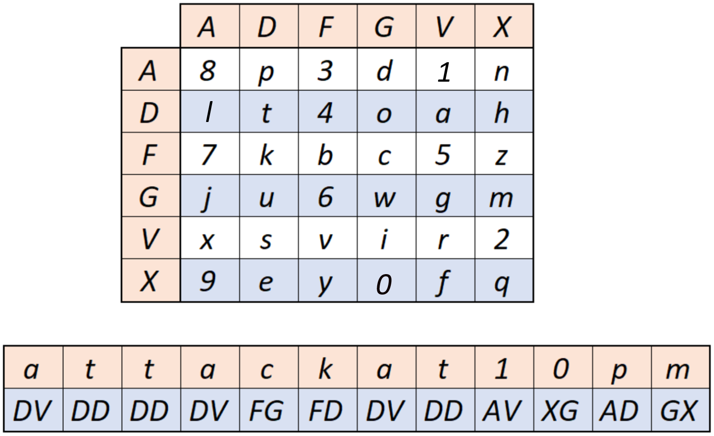
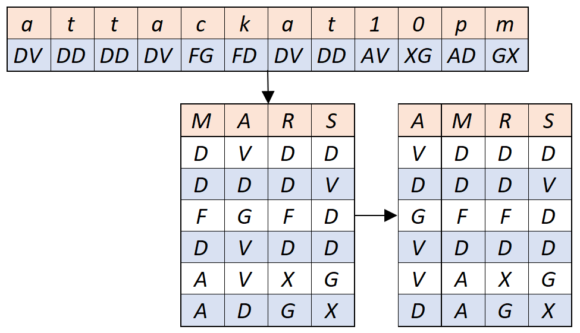

Пример шифрования:
Пусть нам надо зашифровать следующее предложение: "Attack at 10 pm". При следующем заполнении теплицы 6х6. Заменяем каждый символ открытого сообщения на биграмму, исходя из расположения этого символа в таблице. Например, буква “a” находится во второй строке и пятом столбце, поэтому она заменится на DV.

Далее реализуется лозунговая перестановка на основе ключа. Возьмем в качестве ключа слово "MARS" и применим лозунговую перестановку.

Окончательный текст шифра выписывается по столбцам слева направо, в каждом столбце сверху вниз. В нашем примере, мы получим зашифрованное сообщение: "V D G V V D D D F D A A D D F D X G D V D D G X".